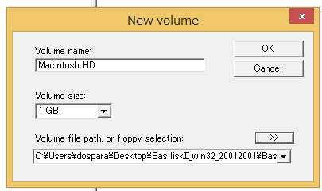
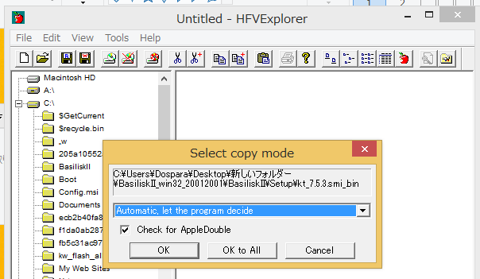
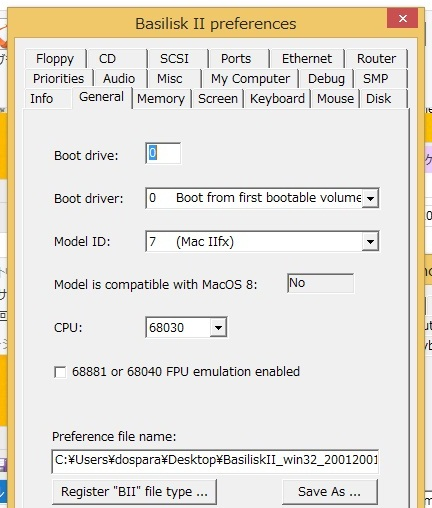
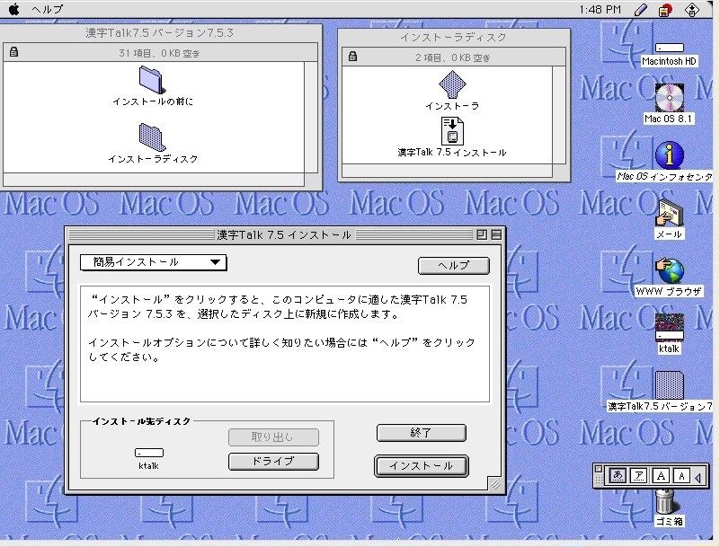
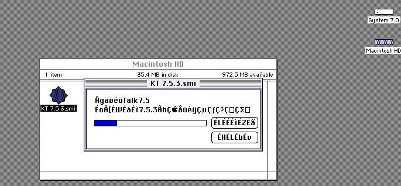
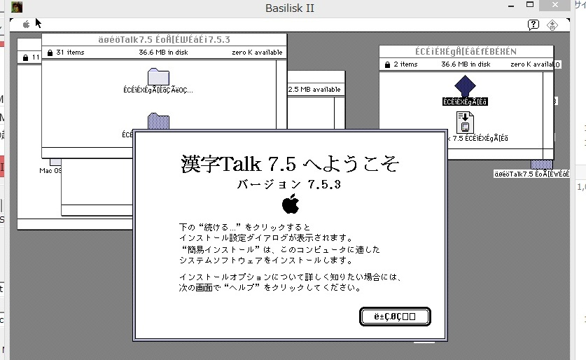
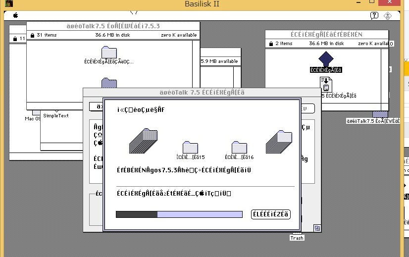
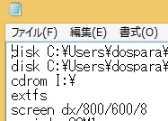
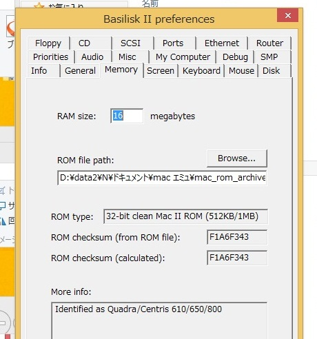
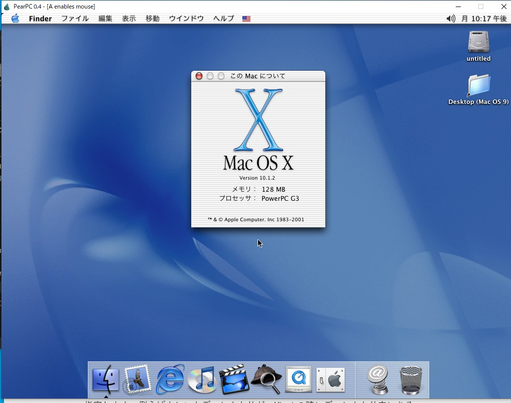

| ・はじめに |
|
インテルマック以降のマックで古いネスケを動かそうとして、 PowerPCアプリケーションはサポートされていませんと出てがっかりした事はありませんか? マックに誕生日を祝われたい? OS Xはただでさえ動かせるソフト少ないのに最新のバージョンは32bitが動かない!! (自分で自分の首を占めていると思うのは自分だけ?) そんな時はエミュレータで動かしてみよう！！ |
| ・項目 | ||
| はじめに | ||
| ソフト一覧 | ||
| Basilisk2 | QEMU | PearPC |
| 参考サイト |
| Basilisk2 |
|---|
| 1.System 7.0から漢字Talk7.5.3をインストール |
| 必要なソフト |
|
system7.0のイメージ(直リンク)
漢字Talk 7.5.3 のイメージ Macintosh Garden MacintoshのROMイメージ eBayとかヤフオクで80年代後半~90年代前半の68k Macintoshを入手し、吸い出す。 PowerMacintoshはダメ Basilisk2本体,HFV Explorer BasiliskII for Windows • E-Maculation Forum 注 Windows 10 1903では同じ設定でも再起動時に画面が真っ白になるなど 動作が安定しませんでした。8.1では安定して動作したので、多分7とかで大丈夫だと思います。 |
| インストール方法 |
|---|
|
 左ベインから漢字Talkが保存してあるディレクトリに移動し、ファイルをツールバーからコピーする。 そして先ほど作成したボリュームに移動し、ペーストする。   (注 system7.0を起動させるときはModel IDをMac2fxにするといいです) screenタブで任意の設定を行う。Diskタブで解凍したsystem7のディスク、 hfv explorerで作成した漢字Talkのディスクのパスを指定 (ちなみにbasilisk2と同ディレクトリにディスクのファイルを置くと、ソフトに絶対パスが表示されない) 起動すると画面にダイアログが表示されるが、そのままクリックすると デスクトップ画面が表示される。(ぱっと見現在のOS Xとあまり変わらん...) 先ほどHFV Explprerで作成したディスクがマウントされているので、 中の漢字Talkのファイルをクリックし、解凍させる。     あとは画面の指示(フィーリング)に従ってインストールを進める。 インストールが終わり、つずけるか再起動するか問われる画面が出るので再起動させる。 再起動時にMac OSのロゴが出て、爆弾もなくデスクトップが表示されたら完了です。 |
| Mac OS 8を新規インストール |
|---|
|

basilisk2を終了させて、
ファイルBasiliskⅡ_prefsをメモ帳などで開き、
3行目のCDのパスをisoの絶対パスに書き換える。 ファイルを上書き保存し、 再度basilisk2を開く。機種やromを 以下のようにし、generalタブからboot driverをcdにする  あとはディスクユーティリティでフォーマットし、インストールを進める。 |
| PearPCでOSX |
|---|
| ダウンロード先 |
| PearPC • E-Maculation Forum |
|
ppc.exeがあるディレクトリ内の.kconfigファイルを編集し、
コマンドプロンプトでそのディレクトリに移動 ppc.exe ppc.configと入力すると起動する。 |
| configの例 |
| 設定ファイル |
|
 |
| QEMUでOS9 |
| 本体ダウンロード先 |
| qemuダウンロード先(OSX) |
| Windoes用 |
|
上で示したフォーラムのページ上部に示されているqemuは音声出力をサポートしていません
ページを下に下げるとサウンドがサポートされたバージョンがダウンロードできます |
|||
| インストール方法 | |||
|
DOSプロンプトでqemuが展開されたディレクトリに移動し、
./qemu-img create -f raw -o size=2G MacOS9.2.img と入力 size=で容量を指定し、その後ろでファイル名を指定する。 |
|||
| qemuがあるディレクトリ内の.commandファイルを開き、以下のようにする。 | |||
|
|||
|---|---|---|---|
| インストール後、hddから起動させるには、 -boot dをcに変更 cdrom,diskの順番をdisk,cdromに変更 以降この状態で起動させる | |||
OS9の正月三が日の起動画面
展開されるリストの一番下をクリックし、インストールする。その後インストールしたディスクをSheepShaverで起動させる。(起動時に0.1秒ぐらいWelcome To Macintoshが表示される)